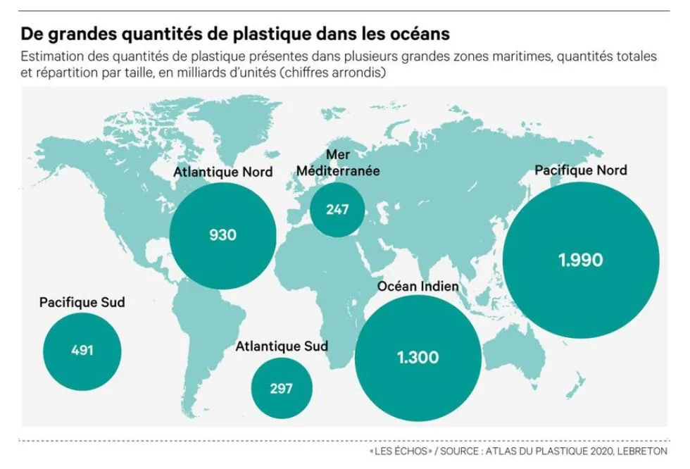

Effet des vents dominants
Les vents poussent les déchets de surface vers des zones de convergence océanique.
Conséquences des bouteilles jetables sur les milieux marins et les communautés vulnérables
Le plastique flottant est piégé par la combinaison des vents, des courants de surface et des gyres, ce qui crée des zones d'accumulation persistantes.

Les vents poussent les déchets de surface vers des zones de convergence océanique.
Les grands tourbillons océaniques fonctionnent comme des pièges lents mais efficaces.
Une fois au large, les déchets restent longtemps en circulation avant de se fragmenter en microplastiques.
Le plastique ne biodégrade pas vraiment: il se fragmente en microplastiques et entre dans les chaînes biologiques.
On appelle microplastiques les fragments de plastique de 5 mm ou moins. Une bouteille PET exposée au soleil, au sel et aux vagues se fragmente en particules invisibles, qui peuvent ensuite être ingérées par le plancton, les mollusques, les poissons puis les prédateurs supérieurs.
La pollution plastique est aussi une question d'inégalités d'infrastructures, de pouvoir et d'exposition.
Les régions avec un système de collecte limité subissent plus de rejets vers les cours d'eau et les estuaires, alors même qu'elles n'ont pas la plus forte consommation historique de plastique.
Source : UNEP 2020, Our World in Data
Lorsque l'accès à l'eau potable du robinet est insuffisant, la dépendance à l'eau embouteillée devient contrainte, ce qui augmente les coûts économiques et les flux de plastique jetable.
Source : Assemblée des Premières Nations, Jacobs (2025)
Tortues, oiseaux et mammifères marins ingèrent des fragments plastiques ou s'y emmêlent, avec des effets directs sur la mortalité, la reproduction et l'équilibre des réseaux trophiques.
Source : NOAA, Watt et al. (2021)
Le plastique est un problème cumulatif: plus on attend, plus la dépollution devient difficile et coûteuse.
Cette analyse montre une même logique du début à la fin: un objet produit pour quelques minutes d'usage peut rester dans l'environnement pendant des décennies, se transformer en microplastiques, puis toucher des populations et des écosystèmes déjà vulnérables. Le plastique est donc à la fois un enjeu écologique, sanitaire et social.
La suite logique est de combiner trois leviers: réduire à la source, améliorer la gestion des déchets et garantir l'accès équitable à l'eau potable.